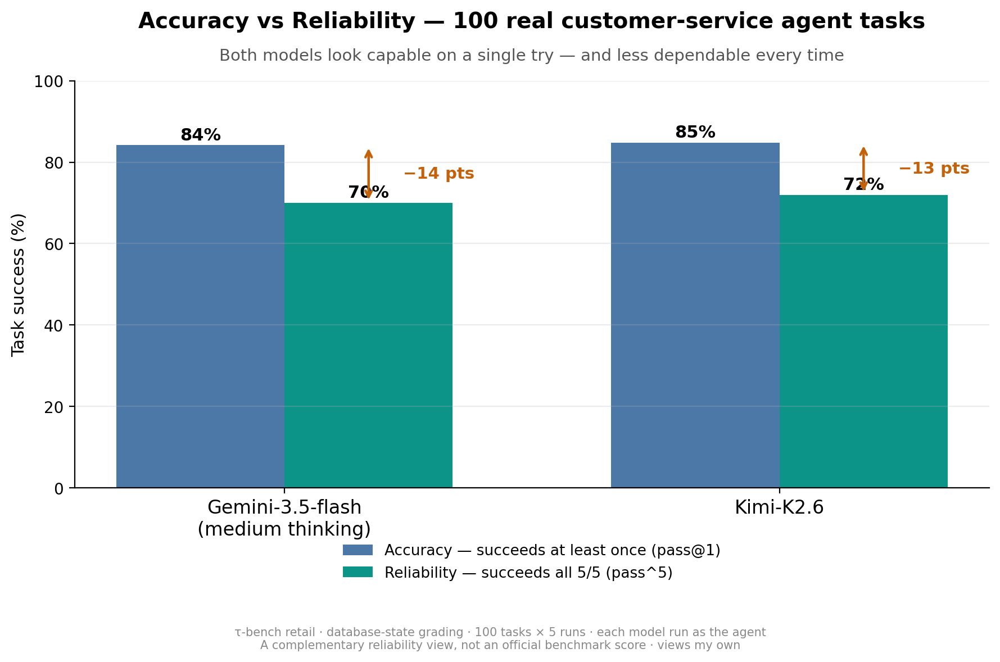

Accuracy tells you an AI agent can do a task. Reliability tells you it will — every time. Here's the gap, measured on 100 real customer-service tasks.
Model scorecards measure how capable a model is. But enterprises don't deploy a model — they deploy an agent: at least a model wrapped in tools, memory, and a workflow, and often more. The scorecard measures one part; production depends on the whole system.
So I tested two frontier models as customer-service agents on 100 real tasks (τ-bench retail, graded on the actual database end state), running every task 5 times.
Two numbers tell different stories:
| Measure | What it asks | Result |
|---|---|---|
| Accuracy (pass@1) | Did it succeed at least once? | ~85% |
| Reliability (pass^5) | Did it succeed all 5 times? | ~71% |
Both numbers are real. Accuracy says the capability is there. Reliability says how often you can count on it end to end. For workflows where every run reaches a customer, that ~14-point gap is the distance between a strong demo and a dependable deployment.

Most of the shortfall wasn't outright failure — it was intermittent failure: tasks the agent handled correctly on some runs and got wrong on others, with nothing changed but the run itself. A task that fails every time is easy to catch — it breaks in testing. An intermittent one passes your demo, ships, then fails for a real customer on the run that happens to break.
A note on rigor: at 20 tasks the two models looked clearly different with almost no reliability gap; at 100 they were statistically tied and the gap was clear. Measure reliability on enough tasks.
Independent benchmarks keep finding the same thing: agents look strong on a single try and stumble on realistic, multi-step, or repeated tasks. Single-shot accuracy is the right way to compare models — and an incomplete way to decide whether an agent is ready for production.
The takeaway isn't accuracy versus reliability. It's accuracy and reliability. Scorecards give you the first; production demands the second.
Next: Most agent failures are the kind you can't reproduce →